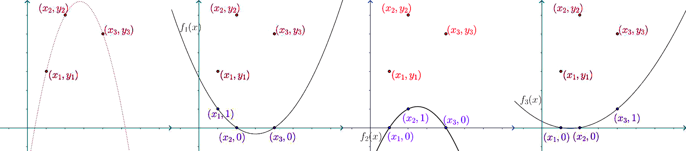
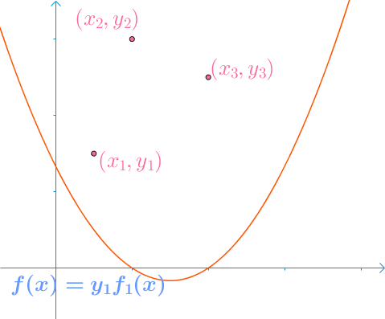

设函数y=f(x)在区间[a,b]上连续，给定n+1个节点（a<x0<x1<⋯<xn<b，不一定均分），在函数类P中寻找φ(x)作为f(x)的近似表达，使其满足
φ(xk)=f(xk)=yk,k=0,1,2,⋯,n
| 被插值函数 |
插值函数 |
插值节点 |
插值区间 |
插值方法 |
| y=f(x) |
φ(x) |
x0<x1<⋯<xn |
[a,b] |
φ(xk)=f(xk)=yk |
函数类P的不同选取对应不同的插值方法。
满足插值条件的多项式Pn(x)存在且唯一。
邻近的两点连成一条直线，即两点式x−x1L−f(x1)=x2−x1f(x2)−f(x1)
L2(x)=x2−x1x−x1[f(x2)−f(x1)]+f(x1)=x2−x1x−x1f(x2)+(1−x2−x1x−x1)f(x1)=x1−x2x−x2f(x1)+x2−x1x−x1f(x2)
假设已知(x1,y1)、(x2,y2)、(x3,y3)，构造插值函数
L3(x)=y1f1(x)+y2f2(x)+y3f3(x)

其中，fi(xj)={10i=ji=j，即选取一组线性无关的基然后确定坐标。

上面讨论中的fi(x)、yi也就是接下来公式中的li(x)、f(xi)。该方法的缺陷是，当精度不够需要增加节点时，要重新确定基，即重新计算li(x)，而增加节点前的计算结果将毫无作用。
已知n个坐标(x1,f(x1)),(x2,f(x2)),⋯,(xn,f(xn))构造构造插值多项式
Ln(x)=i=0∑nli(x)f(xi)
- li(x)=j=ij=0∏nxi−xjx−xj
Ln(x)=i=0∑n⎣⎢⎢⎡(j=ij=0∏nxi−xjx−xj)f(xi)⎦⎥⎥⎤
- 记ωn+1(x)=i=0∏n(x−xi)
- 则ωn+1(xi)=j=ij=0∏n(xi−xj)
Ln(x)=i=0∑n(x−xi)ωn+1′(xi)ωn+1(x)f(xi)
Rn(x)=f(x)−Ln(x)=(n+1)!f(n+1)(ξ)ωn+1(x)=(n+1)!f(n+1)(ξ)i=0∏n(x−xi)ξ∈(a,b)ξ∈(a,b)
其中ξ∈(a,b)且依赖于x，定理只在理论上说明ξ存在。
插值余项的大小与函数的n+1阶导数的值有关。
由插值余项表达式，当xi,i=0,1,2,…,n为互异节点时
i=0∑nli(x)xik=xk k=0,1,2,…,n
利用插值节点x0,x1,⋯,xn得到插值多项式Ln(x)
利用插值节点x1,x2,⋯,xn+1得到插值多项式L~n(x)
得两组插值余项
- Rn(x)=(n+1)!f(n+1)(ξ)i=0∏n(x−xi)
- R~n(x)=(n+1)!f(n+1)(η)i=1∏n+1(x−xi)
认为f(n+1)(ξ)≈f(n+1)(η)则
R~n(x)Rn(x)=f(x)−L~n(x)f(x)−Ln(x)≈x−xn+1x−x0
得事后误差估计表达式
Rn(x)=f(x)−Ln(x)≈x0−xn+1x−x0(Ln(x)−L~(x))
Nn(x)=k=0∑nckωk(x)=f(x0)+ f[x0,x1](x−x0)+ f[x0,x1,x2](x−x0)(x−x1)+ ⋯+ f[x0,⋯,xn](x−x0)⋯(x−xn−1)
- ck=f[x0,…,xk]，其中f[…]表示差商
- ω0(x)=1，ωk(x)=i=0∏k−1(x−xi)，ωk+1(x)=i=0∏k(x−xi)=(x−xk)ωk(x)
牛顿插值多项式与拉格朗日插值多项式是等价的，它们只是形式不同，但表示的都是同一个多项式。
Rn(x)=f(x)−Nn(x)=f[x,x0,x1,⋯,xn]ωn+1(x)
- ωn+1(x)=i=0∏n(x−xi)
- f[x,x0,⋯,xn]=(n+1)!f(n+1)(ξ) ξ∈Range(xi)
牛顿插值多项式插值余项与拉格朗日插值多项式插值余项是等价的。
故f[x,x0,⋯,xn]ωn+1(x)=(n+1)!f(n+1)(ξ)ωn+1(x)，得f[x,x0,⋯,xn]=(n+1)!f(n+1)(ξ)
与拉格朗日插值多项式插值余项相比牛顿插值多项式插值余项更具有一般性，其对f离散或f导数不存在均适用。
函数f(x)满足f(−1)=−2，f(0)=−1、f(1)=0、f′(0)=0，求不超过3次的满足p3′(0)=f′(0)的多项式p3(x)。
解
记x0,x1,x2=−1,0,1，构造p3(x)
p3(x)=N2(x)+λω3(x)=f(x0)+f[x0,x1](x−x0)+f[x0,x1,x2](x−x1)+λ(x−x0)(x−x1)(x−x2)
- f[x0,x1]=0−(−1)(−1)−(−2)=1
- f[x1,x2]=1−0(0)−(−1)=1
- f[x0,x1,x2]=1−(−1)1−1=0
则p3(x)=−2+(x+1)+0+λ(x+1)x(x−1)=λ(x3−x)+x−1
则p3′(x)=λ(3x2−1)+1
p3′(0)=0 ⇒ −λ+1=0 ⇒ λ=1
综上，解得p3(x)=x3−1
在插值节点上，不仅要求函数值相等，还要求导数值相等。
略
若差商f[x0,⋯,xn]中存在重节点，由f[x0,⋯,xn]=n!f(n)(ξ),ξ∈[a,b]，定义一般重节点差商表达式：∀x∈Rn，
f[x,x,⋯,x]n+1=xi→x,i=0,1,⋯,nlimf[x0,x1,⋯,xn]=ξ→xlimn!f(n)(ξ)=n!f(n)(x)
考虑2n+2个互异节点z0,z1,⋯,z2n+1的Newton插值多项式
- N2n+1(x)=f(z0)+j=1∑2n+1f[z0,z1,⋯,zj](x−z0)⋯(x−zj−1)
- R2n+1(x)=f[x,z0,z1,⋯,z2n+1](x−z0)(x−z1)⋯(x−z2n+1)
由差商连续性，当节点z有重复时，上述公式仍然成立。
现令z2i=z2i+1=xi,i=0,1,⋯,n，得：
N2n+1(x)=f(x0)+ f[x0,x0](x−x0)+ f[x0,x0,x1](x−x0)2+ ⋯+ f[x0,x0,⋯,xn,xn](x−x0)2⋯(x−xn−1)2(x−xn)
误差为
R2n+1(x)=f[x,x0,x0,⋯,xn,xn]ωn+12(x)
- ωn+1(x)=i=0∏n(x−xi)
N2n+1(x)即为Newton形式Hermite插值多项式。
求一个4次插值多项式H4(x)，使得
- x=0时，H(0)=−1，H′(0)=−2
- x=1时，H(1)=0，H′(1)=10，H′′(1)=40
写出插值余项表达式。
答
记x0,x1=0,1，明显x0为2重节点；x1为3重节点。
计算差商表得
| x |
f(x) |
一阶 |
二阶 |
三阶 |
四阶 |
| 0 |
−1 |
|
|
|
|
| 0 |
−1 |
f[0,0]=1!f′(0)=H′(0)=−2 |
|
|
|
| 1 |
0 |
f[0,1]=1 |
f[0,0,1]=3 |
|
|
| 1 |
0 |
f[1,1]=1!f′(1)=H′(1)=10 |
f[0,1,1]=9 |
f[0,0,1,1]=6 |
|
| 1 |
0 |
10 |
f[1,1,1]=2!f′′(1)=2H′′(1)=20 |
f[0,1,1,1]=11 |
f[0,0,1,1,1]=5 |
带入Newton插值公式N(x)得
H4(x)=−1−2x+3x2+6x2(x−1)+5x2(x−1)2
R4(x)=(n+1)!f(n+1)(ξ)i=0∏n(x−xi)=5!f(5)(ξ)x2(x−1)30<ξ<1
在区间两端，插值次数越高，插值结果与原函数偏离越大的现象。

相邻两个插值节点做线性插值。但会导致不可导。
只能保证一阶线性可导。
H3(i)(x)=φi−1(x)yi−1+φi(x)yi+ψi−1(x)yi−1′+ψi(x)yi′
φi−1(x)=hi31(2x+xi−3xi−1)(x−xi)2
φi(x)=hi31(3xi−2x−xi−1)(x−xi−1)2
ψi−1(x)=hi21(x−xi−1)(x−xi)2
ψi(x)=hi21(x−xi−1)2(x−xi)
若函数S(x)∈C2[a,b]，且在每个小区间[xj,xj+1]上是三次多项式，其中a=x0<x1<⋯<xn=b是给定节点，则称S(x)是节点x0,x1,⋯,xn上的三次样条函数，aj,bj,cj,dj为待定参数。
S(x)=ajx3+bjx2+cjx+dj,j=0,1,2,⋯,n−1
- S′(x0)=f0′
- S′(xn)=fn′
- S′′(x0)=f0′′
- S′′(xn)=fn′′
特别的，当S′′(x0)=S′′(xn)=0时，称为自然边值条件。
要求S(x)也是周期函数，此时边界条件满足：
- S(x0+0)=S(xn−0)
- S′(x0+0)=S′(xn−0)
- S′′(x0+0)=S′′(xn−0)
此时称作周期样条函数。
直接利用三次分段Hermite插值
S(x)=j=0∑n[yjaj(x)+mjβj(x)]
该方法对边界条件（1）的计算量最低。
S(x)=6hi(xi−x)3Mi−1+(x−xi−1)3Mi+(hiyi−1−6hiMi−1)(xi−x)+(hiyi−6hiMi)(x−xi−1)
该方法对边界条件（2）的计算量最低。